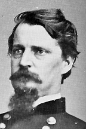

|

|

|
|
|
Union general and Democratic politician, Winfield Scott
Hancock was born on February 14, 1824, in Montgomery County,
Pennsylvania, to Elizabeth and Benjamin Franklin Hancock.
Hancock used his family's Democratic Party connections to
secure an appointment to West Point, graduating in 1844 in
the bottom third of his class. Breveted a second
lieutenant, Hancock served effectively as an infantry
recruiter on the Western frontier. He first experienced
combat in 1847 during the Mexican-American War. Hancock
commanded a company at Chapultepec and discovered that he
enjoyed battle. Breveted first lieutenant, the gregarious
Hancock became friends with his fellow officers, including
Virginian Lewis Armistead. Returning to garrison duty in
St. Louis, Hancock married Almira Russell, a supportive wife
who saw him through the disappointments of peacetime army
service. In 1861, Hancock, a captain of infantry, was
stationed in Los Angeles as chief quartermaster for the
southern district of California.
A Democrat and Southern sympathizer, Hancock favored
states' rights, but he never considered taking up arms
against the Union. After hosting a bittersweet farewell
dinner for friends who had decided to fight for the
Confederacy, Hancock traveled east to seek an infantry
command. Fellow Democrat General George B. McClellan gave
Hancock the Third Brigade, Smith's Division, Army of the
Potomac, which in 1862 was assigned to the Second Division,
Fourth Corps. In May, the new brigadier general skillfully
led his men at the battle of Williamsburg, earning the
nickname "Hancock the Superb." In September, he assumed
command of the First Division, Second Corps when its senior
officer was mortally wounded at Antietam.
Breveted to major general, Hancock was a stickler for
military procedure whose men admired his geniality and
dashing appearance. In December 1862, he demonstrated his
outstanding leadership abilities and conspicuous personal
bravery during the futile federal assault on Marye's Heights
at Fredericksburg. In May 1863, he valiantly held his
division in an exposed position while the rest of the Union
Army retreated from Chancellorsville. Hancock succeeded to
the command of the Second Corps in June, just before the
Army of the Potomac under General George G. Meade marched
north in pursuit of the Army of Northern Virginia and
General Robert E. Lee.
Word arrived at Meade's Maryland headquarters on July 1st
that the Confederates had been engaged near Gettysburg,
Pennsylvania, and that Union First Corps commander, General
John F. Reynolds, had been killed. Meade, ignoring military
protocol, sent Hancock ahead to take command on the field
while the rest of the army came up. Hancock's main
contribution that day was to restore order to the Union
forces and place the troops in defensive positions along
Cemetery Ridge and Culp's Hill. His steadiness under fire
was evident the next day when he commanded his own Second
Corps at the center of the Union line and shored up the
exposed Third Corps to his left. On July 3rd, Hancock was
again in the thick of the action, commanding the Union
defense during Pickett's Charge, an assault in which his
friend, Confederate General Lewis Armistead, was mortally
wounded. Hancock, also wounded, refused to leave the field
until victory was assured.
Despite nursing a painful, unhealed thigh wound, Hancock
returned to the Second Corps in March 1864. He fought well
in the Wilderness Campaign and Spotsylvania, but his corps
suffered heavy losses at Cold Harbor during frontal attacks
on entrenched Confederate positions. Hancock
uncharacteristically declined to assume field command at
Petersburg on June 15th, missing a potential opportunity to
overrun the then lightly- defended city. Hancock gave up
his Second Corps command in November 1865, and after
attempting unsuccessfully to recruit volunteers for a new
veteran corps, he finished the war as commander of the
Department of West Virginia and the Middle Military
Division.
In 1866, Congress awarded Hancock the postwar rank of
major general. He returned to the regular Army serving
stints as commander of the Military Department of the
Missouri and the Fifth Military District. Stationed in New
Orleans, Hancock, an opponent of Radical Reconstruction,
issued orders designed to keep free blacks off juries and
voter-registration lists. General Ulysses S. Grant recalled
Hancock to Washington and briefly appointed him commander of
the Division of the Atlantic. After Grant became president
in 1869, Hancock was assigned to the remote Department of
Dakota. Meade's death in 1872 entitled Hancock, as the
Army's senior major general, to reclaim command of the
Division of the Atlantic. From division headquarters in New
York City, Hancock pursued his long-standing political
ambitions. In 1880, Hancock won the Democratic presidential
nomination but lost the general election to Republican James
A. Garfield. During the campaign Grant condemned Hancock's
postwar administration of the Fifth District, so it was
ironic that Hancock's last public duty was to plan and
direct Grant's 1885 funeral. Hancock died in New York on
February 9, 1886.
Source: Joan Waugh, ed., Facts on File Encyclopedia of American
History: Civil War and Reconstruction, 1856 to 1869 (New York: Facts on
File, 2003), 163-164.
|